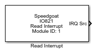

IO821 - Read Interrupt
IO821 - Read Interrupt — Read the IO821 I/O module
interrupt source
Library
Simulink Real-Time - Speedgoat

Description
The Read Interrupt driver block outputs the source of the interrupt and handles it
accordingly. The model must contain an Interrupt Setup block that triggers a
subsystem or the model. Place the Read Interrupt driver block either in the
subsystem or the model depending on your setup.
Ports
Output
-
IRQ Src
The source of the interrupt:
Parameters
Main
-
Module ID
This ID defines the link to the corresponding Setup block
-
Sample Time
Defines the base sample time at which this driver block gets its sample hit. This
parameter can also be set to -1 for inherited
sample time. The units are in seconds.